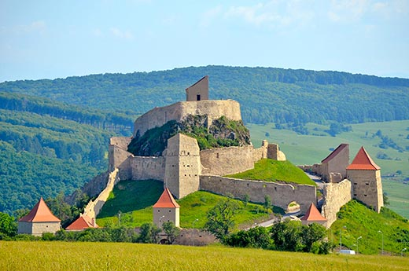

Cetatea Rupea
Cetatea Rupea este unul dintre cele mai vechi vestigii arheologice de pe teritoriul României, primele semne de așezări omenești datând din paleotic si neoliticul timpuriu (5.500-3.500 î.H.). Prima atestare documentară datează din anul 1324 când sașii răsculați împotriva regelui Carol Robert, al Ungariei s-au refugiat în interiorul cetății, Castrum Kuholm. Numele de Kuholom face referire la roca pe care a fost ridicata: bazaltul. Documente din secolul al XV-lea menționează cetatea ca fiind un important centru comercial și meșteșugăresc, cu 12 bresle. Cetatea a servit de-a lungul timpului ca fortificație dar și refugiu pentru populația ce locuia dealurile și valea din împrejurimi, așezarea ei fiind strategică: la îmbinarea drumurilor ce făceau legătura între Transilvania, Moldova și Țara Românească prin pasurile sud-estice.
Cetatea Rupea, ridicatǎ pe Dealul Cohalmului, dominând de sus orașul, a fost construitǎ și extinsǎ în secolele al XIV-lea– al XVII-lea, ca cetate și refugiu pentru satele din împrejurimi. În prezent este în stadiu de ruinǎ. Curtinele formează 4 incinte, fiind întărite din loc în loc cu turnuri poligonale, circulația fiind controlatǎ de mai multe porți interioare care compartimenteazǎ ansamblul fortificat. Incinta centralǎ este prevăzută cu un reduit și cu o capelă.
Cercetările arheologice au scos la iveală diverse obiecte din aceasta epocă, mărturie a așezărilor în regiune: unelte din piatră, fragmente ceramice, urne funerare etc.. În vremea dacilor, pe aceste locuri a fost ridicată dava cunoscută sub numele de Rumidava sau Ramidava (după diversele izvoare istorice); cucerită de romani, cetatea Rumidava devine castrul roman Rupes ("stancă" sau "piatră"). Numele roman fiind cel mai probabil legat de faptul ca cetatea este construită pe un masiv de bazalt. Numele roman a dat și numele localității de astăzi, formată în jurul dealului: Rupea.
Castrul roman Rupes făcea parte din centura de fortificații romane pentru apărarea zonei comerciale și a rutelor ce legau Valea Târnavelor, Valea Oltului, Râșnov și Hoghiz. Mai târziu, pe vestigiile dacice se formează localitatea prefeudală: prin construirea cetății de sus, în secolul X-XIII, și cea medievală, ulterior, prin construirea cetății de mijloc și de jos, începând din secolul al XIV-lea. Între anii 1432 - 1437, cetatea a fost atacată și jefuită de către turci, pentru ca mai târziu, în anul 1643, să fie părăsită, după ce un incendiu devastator a transformat-o în ruine. La sfârșitul aceluiași secol, sașii revin în cetate, pentru a se refugia. De această dată, cetatea va fi predată armatelor habsburgice fără rezisteță armată.
În 1716, zidurile cetății au folosit drept refugiu supraviețuitorilor epidemiei de ciumă, izbucnită în localitatea de lângă cetate. Cetatea a fost abandonată definitiv în anul 1790, în urma unei furtuni puternice care i-a distrus acoperișul. De atunci, cetatea este lăsată in paragină, deși localitatea Rupea a devenit în perioada interbelică un puternic centru cultural săsesc.
Cetatea Rupea este situată la 50 km de Brașov, construită pe un masiv de bazalt, în zona rezervației geologice Dealul Cohalm \ Este o cetate țărănească cu patru zone întărite cu turnuri poligonale. Cetatea este modificată în timp, prin adăugarea a două curți interioare și trei turnuri de apărare. Fortăreața este construită pe trei incinte:
Prima incintă a sistemului de fortificare este cetatea de sus, care datează din perioada prefeudală, secolul X-XIII. cuprinde cele mai recente extinderi, printre care și Turnul Slaninii, specific comunităților săsești. Tot aici se găsește și fântâna adanca de 59 de metri. Cetatea de sus are o suprafață de peste 1.500 mp. Sistemul de apărare al cetății are la bază zidurile acestei incinte, perfect îmbinate cu rocile naturale. Intrarea în cetatea de sus se făcea printr-un culoar foarte îngust, poarta de sub Turnul Pulberăriei, Turnul cu vârful îngroșat. Se pot observa în interiorul incintei urmele de încăperi, ce au servit drept locuințe pentru populația refugiată în cetate, pe timpul asediilor. Cele mai cunoscute încăperi din cetatea de sus sunt Camera judelui și Camera preotului. Acestea sunt însă foarte greu identificabile astăzi.
Cetatea de mijloc a fost construită în secolul al XV-lea și modificată, pentru a fi mărită, în secolul al XVII-lea. Aici se pot identifica Turnul cu gratii, Capela și un alt Turn Pentagonal, unic în Europa, poartă de intrare în cetatea de mijloc. În această perioadă, cetatea a fost mărită prin adăugarea unei curți interioare, în care în anul 1623 este săpată fântâna cetății, adâncă de 59 m și nesecată până în prezent. Tot în cetatea de mijloc se pot observa turnul și poarta principală de jos care datează din secolul al XVII-lea.
Cetatea de jos a fost construită începând cu secolul al XVIII-lea. Din această perioadă datează locuința paznicului cetății, din 1850, și magazia militară, construită la începutul secolului al XIX-lea.
În planurile cetății sunt menționate și Turnul Slăninii (specific cetăților săsești), Turnul Slujitorilor, magazia cu pulbere, Turnul Ungrei, Portița Cercetașilor cu Turnul Cercetașilor, Camera judelui regal, Camera judelui scaunal, Turnul Scribilor, o gură de tragere, Camera scaunală și Camera de sus. Cetatea Rupea are forma unei spirale ascendente (cochilii de melc).